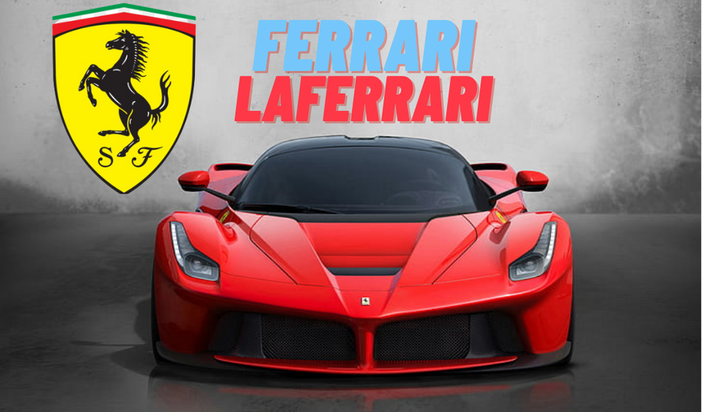

What is a supercar ?
The obvious answer is speed, both in terms of top speed and acceleration. In a hierarchy that begins with sports cars and ends with hypercars, supercars are the high-performance middle, featuring vehicles that are more than capable of tearing up the track and leaving common sports cars in the dust. There are no broadly agreed demarcations on the term supercar, though. Some have cited a mid-engine requirement, but that would leave several high-performing front-engined models — such as the Ferrari F12berlinetta — out of the mix in a way that doesn’t make sense. Analyzing the feel behind the wheel and the use of unique technologies to enhance the driving experience could also play a role, as could other aspects of the vehicles such as power-to-weight ratio. Price and scarcity may also be relevant — but these things are often subjective. Perhaps what matters to many is the nameplate of the vehicle itself. In that regard, brands like Ferrari are synonymous with both supercars and hypercars.
What classifies a supercar as something more than a garden-variety sports car is often going to be a question of degree. Common sports cars are often graceful, high-performing vehicles, but when questioning the difference between supercars and sports cars, the supercar will always win out. How fast is the vehicle and what level of aerodynamic engineering is at play? Even things like price and availability may be factors. Once upon a time, American muscle cars were considered supercars in some quarters, but nowadays, nobody is going to confuse a comparatively humble Ford Mustang with a Ferrari F8 Tributo. Similarly, a Porsche 911 is significantly more common than a Ferrari Portofino, which will lead some to call the 911 a sports car and the Portofino a supercar due to limited production numbers. What’s under the hood also plays a role, of course — but the point, again, is that there is subjectivity in the term.